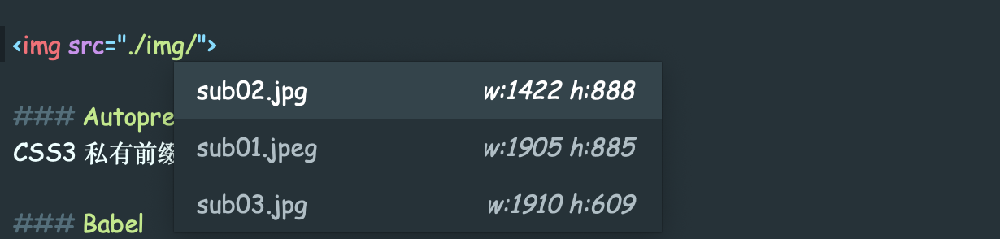
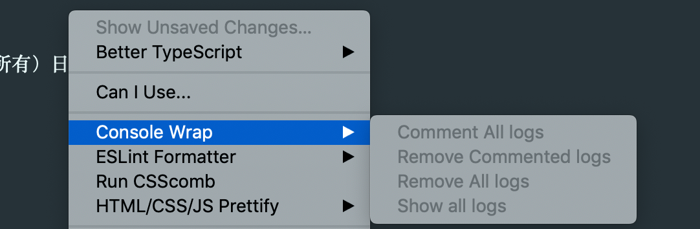
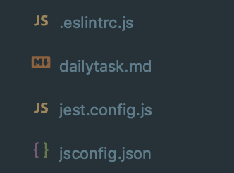
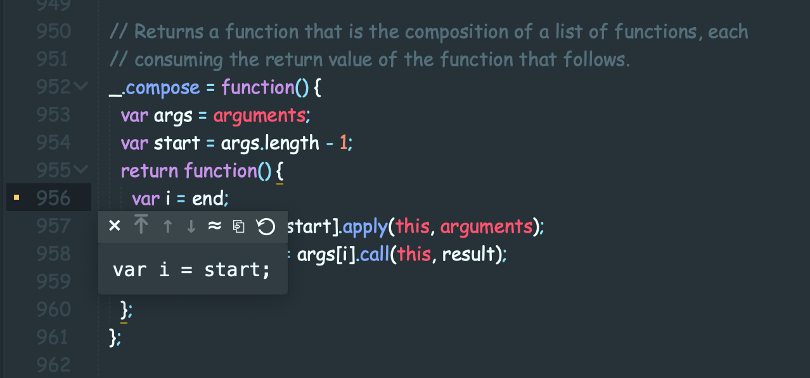
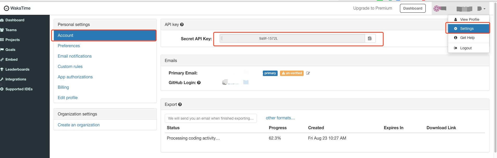
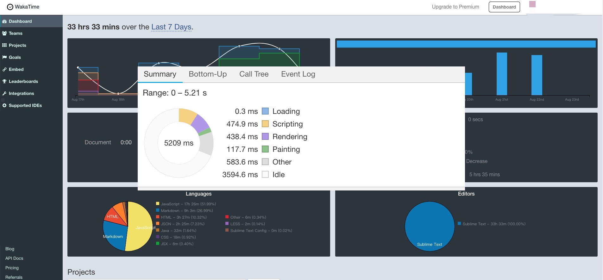
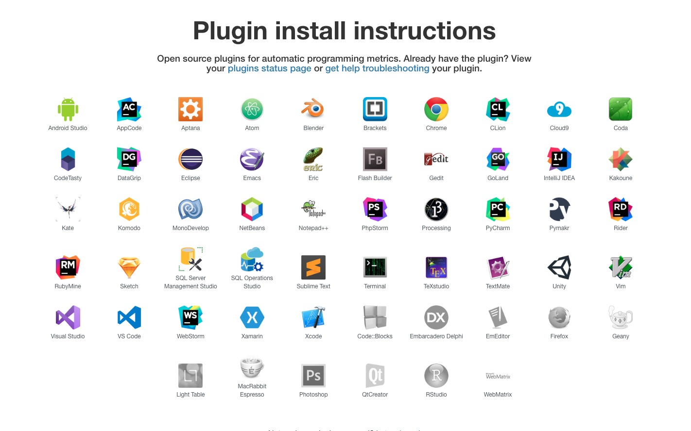

Sublime 编辑器常用设置

首选项设置
{
"color_scheme": "Packages/Color Scheme - Default/Mariana.sublime-color-scheme",
"font_face": "Comic Sans MS", //设置字体
"font_size": 14, //设置字体大小
"ignored_packages": ["Vintage"],
"spell_check": false,
"tab_size": 4, //tab 4个空格
"theme": "Adaptive.sublime-theme",
"translate_tabs_to_spaces": true, //空格代替tab缩近
"dpi_scale": 1.0 //文件名称中文乱码问题
"expand_tabs_on_save": true // //设置保存时自动转换
}
设置 js 文件在 sublime 面板中执行
- 选择菜单 Tools --> Build System --> new Build System
- 中文版的话是 工具 --> 编译系统 --> 新建编译系统
- 然后写入下面内容:
{
"cmd": ["node", "$file"],
"file_regex": "^[ ]*File \"(...*?)\", line ([0-9]*)",
"working_dir": "${project_path:${folder} }",
"selector": "source.js",
"shell": true,
"encoding": "utf-8",
"windows": {
"cmd": ["taskkill /F /IM node.exe >nul 2>nul & node", "$file"]
},
"linux": {
"cmd": ["killall node; node", "$file"]
},
"osx": {
"cmd": ["killall node >/dev/null 2>&1; node $file"]
}
}
- 接着保存为 javascript.sublime-build，保存位置默认即可
- Ctrl + B 或者 F7 运行
插件
All Autocomplete
Sublime Text 默认的 Autocomplete 功能只考虑当前的文件，而 AllAutocomplete 插件会搜索所有打开的文件来寻找匹配的单词提示
AutoFileName
快速录入文件路径

Autoprefixer
CSS3 私有前缀自动补全插件，显然也很有用哇
- 打开 sublime ，选择菜单 Preferences > Browse Packages 将下载的压缩包解压到这里
- 设置快捷键：选择菜单 Preferences > Key Bindings – User，可自定义，也可直接 ctrl+shift+p 选择 autoprefixer
[
{ "keys": ["ctrl+alt+p"], "command": "autoprefixer" }
]
- 选择菜单：Preferences > Package Settings > Autoprefixer > Settings - User
- 为浏览最新版本添加前缀，市场份额大于 0.1%，份额>5%
{
"browsers": ["last 2 version", "> 0.1%", "> 5%"]
}
Babel
这个插件可以在你的 ES6/2015 和 React JSX 代码上添加语法高亮。安装插件之后，第一件要做的事就是把它设置为 .es6、 .jsx、 以及 .js 文件的默认语法。然而，如果你正在使用 ES3/5 工作，那你要注意最后一种文件，不要使用 Babel 编译你的代码。
Bracket Highlighter
这个插件提供高亮功能
Can I Use
如果您想检查浏览器是否支持你包括在你的代码中的 CSS 和 HTML 元素，那么这是你需要的插件。所有您需要做的就是选择有疑问的元素，插件将为你做其余的事情。
Console Warp
这个插件帮助您轻松地创建（注释、删除、显示所有）日志语句（控制台、日志、打印等） 
ChineseLocalizations
一种让 sublime 汉化的插件
ctranslator-sublime3-plugin
Usage
Use the keyboard shortcut CTRL + Alt + H ( COMMAND + Alt + H on Mac OS X ).
CSS3
CSS 3 支持对 css3 的支持插件
CSScomb
CssComb （ make your code more beautiful）是为 CSS 属性进行排序和格式化插件（需安装 Node.js 使用）
- 自定义 css 属性排序规则；
- 代码作用不发生变化，只是格式变化
- 完全支持 CSS2/CSS2.1/CSS3
- 支持在线排序和本地编辑器安装
排序之前
body {
height: 500px;
position: relative;
background: #fff;
border: 1px solid #f7f7f7;
}
排序之后
body {
position: relative;
height: 500px;
border: 1px solid #f7f7f7;
background: #fff;
}
DocBlockr
注释插件，生成优美的注释。标准的注释，包括函数名、参数、返回值等，并以多行显示，省去手动编写。
自定义配置
{
"jsdocs_extra_tags": ["@Author manji", "@DateTime { {datetime} }", "@version 1.0"]
}
显示效果
/**
* [reduce description]
* @Author manji
* @version 1.0
* @since 2019-08-23T14:54:12+0800
* @param {[type]} num1 [description]
* @param {[type]} num2 [description]
* @return {[type]} [description]
*/
function reduce(num1, num2) {
return num1 - num2;
}
Emmet
emmet 通过一套简单的语法让你快速生成大量的 HTML 代码
?>例如 ul>li*4 tab
FileDiffs
FileDiffs 插件可以让开发者比较两个不同文件的差异，比较的对象包括当前文件、另一文件、剪切板中的代码甚至未保存文件
FileIcons
对文件分类前加图标提示，更加清晰文件类别

GitGutter
它能在 gutter 中显示你这次编辑的文件相比目前 git 暂存区中的文件的异同,将鼠标放在提示符上，会自动显示修改之前的内容信息 
html-css-js prettify
- html-css-js prettify:html、css、javascript、json、react/jsx 和 vue 格式化压缩代码 （需安装 Node.js 使用）
HTML5
支持 hmtl5 规范的插件包
JavaScript Completions
JavaScript Completions最基本的 api 快查片段
JsPrettier
JsPrettier 代码的风格进行自动格式化处理 '配置文档' '参考文档'
!> 需全局安装 prettier;
{
"e4x": false,
"format_on_save": true,
"auto_format_on_save": true,
"auto_format_on_save_excludes": ["*/node_modules/*"],
"custom_file_extensions": ["js", "jsx", "less", "css", "json"],
"prettier_cli_path": "/Users/xxx/.nvm/versions/node/v12.22.12/bin/prettier", // prettier 的调用地址 可以用 which prettier 查到
"node_path": "/Users/xxx/.nvm/versions/node/v12.22.12/bin/node",//是 node.js 的地址 可以用 which node 查到
"prettier_options": {
"bracketSpacing": false,
"arrowParens": "avoid",
"semicolons": true,
"semi": true,
"singleQuote": true,
"tabs": true,
"requirePragma": false,
"proseWrap": "preserve",
"printWidth": 120,
"tabWidth": 4,
"tabs": true,
"parser": "babylon",
"trailingComma": "none",
"jsxBracketSameLine": false
}
}
JSX
解析 JSX 文件的语言定义
LESS
less 文件语法高亮插件
LiveStyle
- LiveStyle 是 Chrome 中提高开发效率的一款 CSS 编辑器插件。利用 LiveStyle 和 Sublime Text3 编辑器结合可实现可视化开发，一次配置，简单易用！，并且最近支持 less,scss 你本地 css 文件可以和浏览器的 css 文件映射，同步到本地，但是必须在 chrome 上运行，chrome 必须安装相应的插件
Markdown Preview
直接在浏览器里预览 markdown 的写作效果
通过 Preferences -> Key Bindings - User 打开 sublime 的快捷键配置文件，把下面内容复制到这个设置文件里保存。
{
"keys": ["alt+m"],
"command": "markdown_preview",
"args": { "target": "browser", "parser": "markdown" }
}
配置完成后，按下 alt + m 即可直接在浏览器里预览 markdown 的写作效果。
Terminal
- 在编辑的文件目录打开 cmd：ctrl+shift+t
{
"keys": ["ctrl+shift+t"],
"terminal": "iTerm2-v3.sh", //设置item2 打开
"command": "open_terminal_project_folder",
"args": {
"parameters": ["-T", "Working in directory %CWD%"]
}
}
WakeTime
WakeTime 自动记录 code 时间, 高效管理 code 时间,无须在自己统计时间
安装
- 在 Package Control: Install Package ，输入 wakatime,选择 WakaTime 安装
- 安装完成后 会弹出一个要你输入 api key 的框, 输入 APIkey 之后
- 插件会自动的统计的你的编程时间
APIkey 获取
打开 WakeTime 的个人设置面板 Account 里的 API Key 单击获取 key 
控制面板

插架支持

{
"api_key": "***********"
}
React ES6 snippets
- 同 sublime-react 一样，作为 react 语法提示，但是 sublime-react-es6 支持 es6 语法。
sidebartools
- 菜单栏右键扩展
sidebarenhancements
- 菜单栏右键扩展
AdvancedNewFile
- 快速创建文件
local history
本地文件版本记录
SyncedSideBar
每次打开文件，侧边栏都会同步显示该文件所在目录树中的位置(如果打开的文件是目录树的子集，还能将目录树自动展开，真是爱之不已，挺有用的一款插件)。